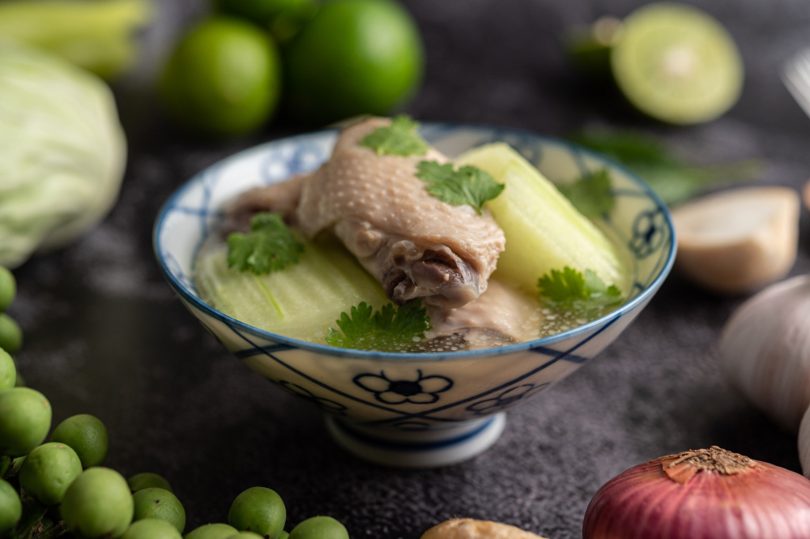

Home
Chicken Tinola

Image by jcomp on Freepik
Tinola is an easy, one-pot soup from the Philippines. Chicken, chayote squash (or green papaya), bok choy, and spinach are simmered with fresh ginger in a savory broth that's delicious served with hot white rice.
Ingredients
- 1 tablespoon cooking oil
- 1 medium onion, chopped
- 2 cloves garlic, minced
- 1 (1 ½ inch) piece fresh ginger, peeled and thinly sliced
- 1 tablespoon fish sauce
- 3 pounds chicken legs and thighs
- 2 (14 ounce) cans chicken broth
- 1 chayote squash, peeled and cut into bite-sized pieces
- salt and ground black pepper to taste
- 1 head bok choy, chopped
- 1 (8 ounce) package fresh spinach, chopped
Cooking steps:
- Gather all ingredients.
- Heat oil in a large pot over medium heat. Add onion and garlic; cook and stir until fragrant, about 2 minutes.
- Add ginger and fish sauce; cook and stir for 1 to 2 minutes. Stir in chicken and cook for 5 minutes.
- Pour in chicken broth and cook for 5 minutes. Add squash and simmer until chicken is no longer pink in the center, about 10 minutes. Season with salt and pepper.
- Add bok choy and spinach; cook until spinach is just wilted, 1 to 2 minutes. Serve hot.
- Enjoy!